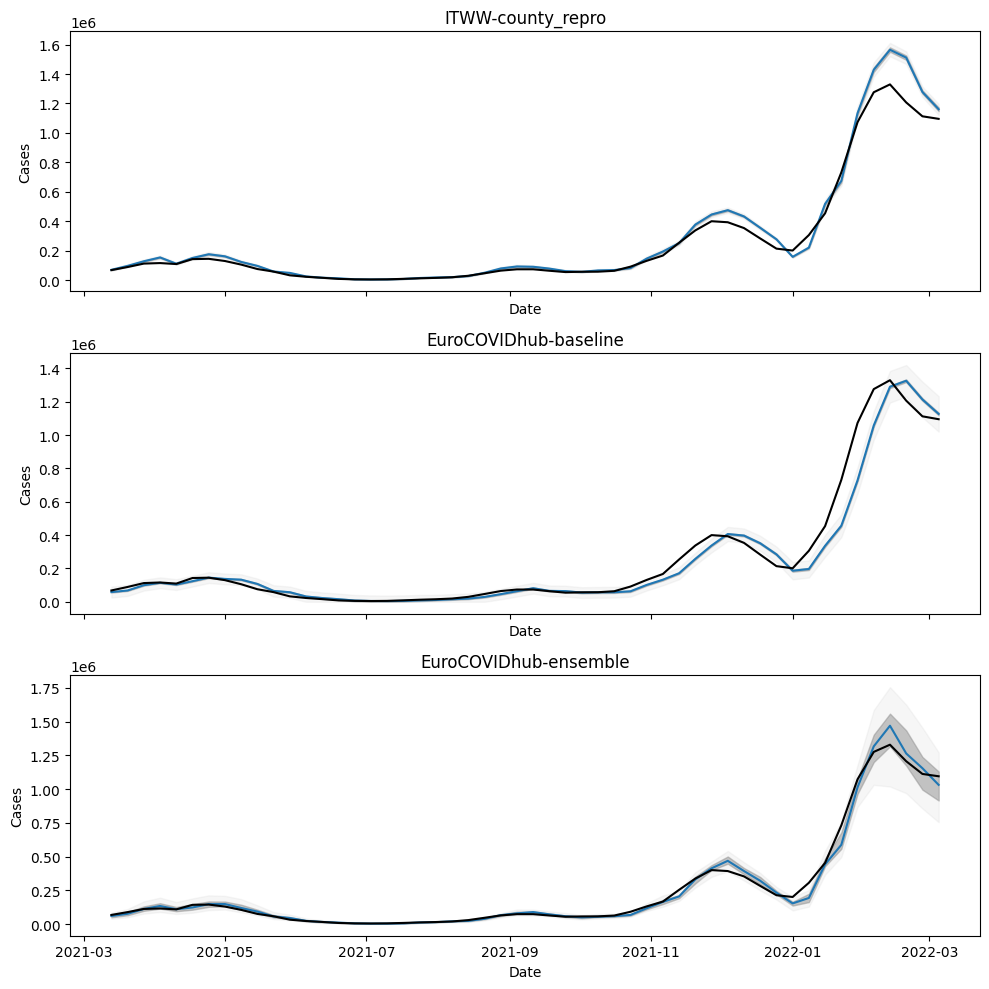

from matplotlib import pyplot as plt
from tqdm.notebook import tqdm
from pyprojroot import hereRegional models
Forecasts from the ECDC FCH
from datetime import date
min_date = date(2020, 10, 12)
max_date = date(2021, 9, 15)import pandas as pd
def forecast_long_to_wide(df: pd.DataFrame) -> pd.DataFrame:
# Quantile column mapping
forecast_quantiles = [
0.01,
0.025,
*[round(0.05 * q, 3) for q in range(1, 20)],
0.975,
0.99,
]
col_map = {q: f"{q * 100:.1f} %" for q in forecast_quantiles}
# Pivot quantile rows
q = df[df["type"] == "quantile"].copy()
q["quantile"] = pd.to_numeric(q["quantile"])
piv = (
q[q["quantile"].isin(col_map)]
.pivot(index="target_end_date", columns="quantile", values="value")
.rename(columns=col_map)
)
# Add mean and sd (if present)
res = piv.copy()
means = (
df[df["type"] == "mean"][["target_end_date", "value"]]
.drop_duplicates()
.set_index("target_end_date")
.rename(columns={"value": "mean"})
)
res = res.join(means)
# Set final column order and output
cols = ["mean", *col_map.values()]
out = res[cols].reset_index().rename(columns={"target_end_date": "date"})
return outimport os
from pathlib import Path
import subprocess
import pandas as pd
from typing import Literal
def standardize_forecast_dfs(
daily_predictions: pd.DataFrame, level: Literal["country", "county"]
) -> pd.DataFrame:
query_string = (
("target == '1 wk ahead inc case' and (location == 'DE' or location == 'GM')")
if level == "country"
else "target == '1 wk ahead inc case' and location like 'GM%'"
)
wide_df = forecast_long_to_wide(
daily_predictions.query(query_string)[
["target_end_date", "type", "quantile", "value"]
]
)
wide_df["date"] = pd.to_datetime(wide_df["date"], format="%Y-%m-%d").dt.date
return wide_df[(wide_df["date"] >= min_date) & (wide_df["date"] <= max_date)]
def read_fch_submissions(
model_dir: str, repo_url: str, clone_dir: Path
) -> pd.DataFrame:
if not clone_dir.exists():
subprocess.run(
["git", "clone", "--depth", "1", repo_url, str(clone_dir)], check=True
)
csv_dir_path = clone_dir / model_dir
csv_files = [
csv_dir_path / file
for file in os.listdir(csv_dir_path)
if file.endswith(".csv")
]
combined_df = pd.concat(
[
pd.read_csv(file_path).assign(filename=file_path.name)
for file_path in csv_files
],
ignore_index=True,
)
return standardize_forecast_dfs(combined_df)# Define repository and local clone directory
model_names = ["ITWW-county_repro", "EuroCOVIDhub-baseline", "EuroCOVIDhub-ensemble"]
models_ecdc = {
name: read_fch_submissions(
f"data-processed/{name}",
"https://github.com/european-modelling-hubs/covid19-forecast-hub-europe_archive.git",
Path("/tmp/covid19-forecast-hub-europe_archive"),
)
for name in model_names
}
itww_county_repro = models_ecdc["ITWW-county_repro"]
baseline = models_ecdc["EuroCOVIDhub-baseline"]
ensemble = models_ecdc["EuroCOVIDhub-ensemble"]Cloning into '/tmp/covid19-forecast-hub-europe_archive'...
fetch-pack: unexpected disconnect while reading sideband packet--------------------------------------------------------------------------- KeyboardInterrupt Traceback (most recent call last) Cell In[3], line 4 1 # Define repository and local clone directory 2 model_names = ["ITWW-county_repro", "EuroCOVIDhub-baseline", "EuroCOVIDhub-ensemble"] ----> 4 models_ecdc = { 5 name: read_fch_submissions( 6 f"data-processed/{name}", 7 "https://github.com/european-modelling-hubs/covid19-forecast-hub-europe_archive.git", 8 Path("/tmp/covid19-forecast-hub-europe_archive"), 9 ) 10 for name in model_names 11 } 13 itww_county_repro = models_ecdc["ITWW-county_repro"] 14 baseline = models_ecdc["EuroCOVIDhub-baseline"] Cell In[3], line 5, in <dictcomp>(.0) 1 # Define repository and local clone directory 2 model_names = ["ITWW-county_repro", "EuroCOVIDhub-baseline", "EuroCOVIDhub-ensemble"] 4 models_ecdc = { ----> 5 name: read_fch_submissions( 6 f"data-processed/{name}", 7 "https://github.com/european-modelling-hubs/covid19-forecast-hub-europe_archive.git", 8 Path("/tmp/covid19-forecast-hub-europe_archive"), 9 ) 10 for name in model_names 11 } 13 itww_county_repro = models_ecdc["ITWW-county_repro"] 14 baseline = models_ecdc["EuroCOVIDhub-baseline"] Cell In[2], line 33, in read_fch_submissions(model_dir, repo_url, clone_dir) 29 def read_fch_submissions( 30 model_dir: str, repo_url: str, clone_dir: Path 31 ) -> pd.DataFrame: 32 if not clone_dir.exists(): ---> 33 subprocess.run( 34 ["git", "clone", "--depth", "1", repo_url, str(clone_dir)], check=True 35 ) 37 csv_dir_path = clone_dir / model_dir 38 csv_files = [ 39 csv_dir_path / file 40 for file in os.listdir(csv_dir_path) 41 if file.endswith(".csv") 42 ] File ~/.local/share/uv/python/cpython-3.10.17-macos-aarch64-none/lib/python3.10/subprocess.py:505, in run(input, capture_output, timeout, check, *popenargs, **kwargs) 503 with Popen(*popenargs, **kwargs) as process: 504 try: --> 505 stdout, stderr = process.communicate(input, timeout=timeout) 506 except TimeoutExpired as exc: 507 process.kill() File ~/.local/share/uv/python/cpython-3.10.17-macos-aarch64-none/lib/python3.10/subprocess.py:1146, in Popen.communicate(self, input, timeout) 1144 stderr = self.stderr.read() 1145 self.stderr.close() -> 1146 self.wait() 1147 else: 1148 if timeout is not None: File ~/.local/share/uv/python/cpython-3.10.17-macos-aarch64-none/lib/python3.10/subprocess.py:1209, in Popen.wait(self, timeout) 1207 endtime = _time() + timeout 1208 try: -> 1209 return self._wait(timeout=timeout) 1210 except KeyboardInterrupt: 1211 # https://bugs.python.org/issue25942 1212 # The first keyboard interrupt waits briefly for the child to 1213 # exit under the common assumption that it also received the ^C 1214 # generated SIGINT and will exit rapidly. 1215 if timeout is not None: File ~/.local/share/uv/python/cpython-3.10.17-macos-aarch64-none/lib/python3.10/subprocess.py:1959, in Popen._wait(self, timeout) 1957 if self.returncode is not None: 1958 break # Another thread waited. -> 1959 (pid, sts) = self._try_wait(0) 1960 # Check the pid and loop as waitpid has been known to 1961 # return 0 even without WNOHANG in odd situations. 1962 # http://bugs.python.org/issue14396. 1963 if pid == self.pid: File ~/.local/share/uv/python/cpython-3.10.17-macos-aarch64-none/lib/python3.10/subprocess.py:1917, in Popen._try_wait(self, wait_flags) 1915 """All callers to this function MUST hold self._waitpid_lock.""" 1916 try: -> 1917 (pid, sts) = os.waitpid(self.pid, wait_flags) 1918 except ChildProcessError: 1919 # This happens if SIGCLD is set to be ignored or waiting 1920 # for child processes has otherwise been disabled for our 1921 # process. This child is dead, we can't get the status. 1922 pid = self.pid KeyboardInterrupt:
for model, df in models_ecdc.items():
df.to_csv(here(f"data/processed/ECDC_FCH_{model}.csv"), index=False)Forecasts from the German FCH
from datetime import timedelta
fch_repo_url = "https://github.com/KITmetricslab/covid19-forecast-hub-de"
def fch_data_url(model: str, forecast_date: date) -> str:
submission_date = (forecast_date + timedelta(days=-5)).strftime("%Y-%m-%d")
return f"https://raw.githubusercontent.com/KITmetricslab/covid19-forecast-hub-de/refs/heads/master/data-processed/{model}/{submission_date}-Germany-{model}-case.csv"
forecast_dates = pd.date_range(
start=date(2020, 10, 12), end=date(2021, 9, 15), freq="W-SAT"
).date.tolist()
fch_models = ["KIT-baseline", "ITWW-county_repro", "KITCOVIDhub-median_ensemble"]
fch_dfs = {
model: pd.concat(
[
pd.read_csv(fch_data_url(model, fd))
for fd in tqdm(forecast_dates, desc=f"Reading {model}")
]
)
for model in fch_models
}--------------------------------------------------------------------------- NameError Traceback (most recent call last) Cell In[3], line 12 8 submission_date = (forecast_date + timedelta(days=-5)).strftime("%Y-%m-%d") 9 return f"https://raw.githubusercontent.com/KITmetricslab/covid19-forecast-hub-de/refs/heads/master/data-processed/{model}/{submission_date}-Germany-{model}-case.csv" ---> 12 forecast_dates = pd.date_range( 13 start=date(2020, 10, 12), end=date(2021, 9, 15), freq="W-SAT" 14 ).date.tolist() 16 fch_models = ["KIT-baseline", "ITWW-county_repro", "KITCOVIDhub-median_ensemble"] 17 fch_dfs = { 18 model: pd.concat( 19 [ (...) 24 for model in fch_models 25 } NameError: name 'pd' is not defined
standardize_forecast_dfs(fch_dfs["KITCOVIDhub-median_ensemble"])| date | mean | 1.0 % | 2.5 % | 5.0 % | 10.0 % | 15.0 % | 20.0 % | 25.0 % | 30.0 % | ... | 60.0 % | 65.0 % | 70.0 % | 75.0 % | 80.0 % | 85.0 % | 90.0 % | 95.0 % | 97.5 % | 99.0 % | |
|---|---|---|---|---|---|---|---|---|---|---|---|---|---|---|---|---|---|---|---|---|---|
| 0 | 2020-10-17 | NaN | 21539.423788 | 22569.355225 | 23568.090312 | 24586.979322 | 25139.325838 | 25561.499631 | 25932.539485 | 26277.073961 | ... | 28591.117862 | 29302.140058 | 30152.710629 | 31079.838904 | 32123.809361 | 33356.524172 | 34932.633915 | 37322.459967 | 39450.101466 | 41991.884426 |
| 1 | 2020-10-24 | NaN | 36259.974108 | 40010.212500 | 43312.925000 | 47192.300000 | 49605.825000 | 51872.358536 | 52952.611707 | 53923.109962 | ... | 58291.199381 | 58716.924259 | 59153.412378 | 59671.920685 | 60831.195953 | 62635.234335 | 64701.151489 | 67693.593562 | 70602.392253 | 74215.002332 |
| 2 | 2020-10-31 | NaN | 71773.589517 | 73638.165669 | 75280.502599 | 77219.523177 | 79654.000000 | 83829.000000 | 87584.000000 | 90963.000000 | ... | 107475.000000 | 110180.000000 | 112972.000000 | 116318.000000 | 119771.000000 | 123925.000000 | 126976.861592 | 130891.717572 | 133932.255716 | 138512.637213 |
| 3 | 2020-11-07 | NaN | 128928.056101 | 131639.839424 | 134138.933859 | 138871.261618 | 141210.839387 | 143696.640767 | 145158.876872 | 146898.054911 | ... | 153972.172672 | 155487.580999 | 156963.110160 | 159133.790947 | 163005.450209 | 167518.341931 | 173196.590203 | 181612.609510 | 188912.251145 | 197399.662078 |
| 4 | 2020-11-14 | NaN | 119952.026330 | 129980.150000 | 136067.000000 | 137503.000000 | 138904.000000 | 140194.000000 | 141949.000000 | 147334.000000 | ... | 173572.000000 | 177833.000000 | 182631.000000 | 187491.000000 | 193217.000000 | 199890.000000 | 207928.000000 | 219977.000000 | 231903.000000 | 246066.000000 |
| 5 | 2020-11-21 | NaN | 97396.242482 | 104060.481932 | 110108.458379 | 115683.488800 | 119223.418142 | 120945.000000 | 122059.000000 | 123346.000000 | ... | 136235.901986 | 139750.219440 | 146430.900000 | 153778.250000 | 163680.600000 | 170636.000000 | 177966.000000 | 187194.000000 | 197020.000000 | 208404.000000 |
| 6 | 2020-11-28 | NaN | 75040.120473 | 82538.858916 | 89002.873287 | 97030.960444 | 102229.248647 | 106634.864174 | 110372.743812 | 113812.616748 | ... | 129905.667002 | 132834.295917 | 137257.829453 | 143179.904368 | 147545.934159 | 152884.334404 | 159796.770812 | 170003.316064 | 179230.239236 | 190778.863126 |
| 7 | 2020-12-05 | NaN | 99073.714364 | 103654.377174 | 106429.500825 | 110397.726206 | 113170.402772 | 115296.137416 | 117413.526398 | 118612.429230 | ... | 123892.058085 | 124821.077343 | 125814.051913 | 129138.353260 | 130552.346895 | 132309.689481 | 134185.351891 | 136810.836639 | 138873.171844 | 144911.747438 |
| 8 | 2020-12-12 | NaN | 102028.092074 | 106971.000000 | 110320.900000 | 115605.200000 | 118121.700000 | 120789.500000 | 123099.200000 | 125180.900000 | ... | 136966.944209 | 137670.389527 | 141174.700000 | 145046.100000 | 147937.200000 | 151471.400000 | 154830.700000 | 162936.000000 | 168541.900000 | 174167.200000 |
| 9 | 2020-12-19 | NaN | 118050.856771 | 123185.524846 | 127674.122385 | 132990.545650 | 136580.749582 | 139517.928723 | 141841.483594 | 143634.146435 | ... | 163604.357360 | 166131.343093 | 170999.825897 | 179230.857426 | 181605.922234 | 186100.779239 | 189526.778717 | 197975.255846 | 201728.712142 | 205654.302086 |
| 10 | 2020-12-26 | NaN | 148252.940110 | 155455.602883 | 159761.985631 | 164009.878798 | 166702.444583 | 170163.928050 | 174883.302868 | 179017.020334 | ... | 195915.843768 | 200000.375000 | 206957.050000 | 209845.350721 | 213586.108320 | 218212.550535 | 224385.260867 | 234773.215769 | 242729.132301 | 253027.603250 |
| 11 | 2021-01-02 | NaN | 132075.689996 | 136473.511807 | 140014.768738 | 145177.816583 | 147687.264178 | 149729.869615 | 151226.278139 | 154574.085135 | ... | 178937.000000 | 182924.500000 | 188915.000000 | 194982.000000 | 201024.000000 | 214203.000000 | 221485.500000 | 229500.050000 | 237832.600000 | 244060.800000 |
| 12 | 2021-01-09 | NaN | 70866.000000 | 73220.000000 | 75230.970694 | 89936.632948 | 99858.473456 | 107744.037762 | 110582.000000 | 113713.000000 | ... | 134039.000000 | 136517.168760 | 138530.218154 | 141134.250000 | 143679.000000 | 147026.000000 | 153446.000000 | 157519.000000 | 168203.000000 | 174302.000000 |
| 13 | 2021-01-16 | NaN | 108226.842253 | 116490.412037 | 120290.786069 | 123473.865113 | 125682.614486 | 127926.356360 | 131371.871120 | 133982.655333 | ... | 151166.717929 | 154642.301674 | 158108.866648 | 163738.650933 | 175791.735578 | 182563.520762 | 187019.207026 | 194751.634072 | 208596.830790 | 222159.902957 |
| 14 | 2021-01-23 | NaN | 90075.738919 | 91272.394498 | 92656.279309 | 97069.706332 | 99886.312797 | 101186.952415 | 102671.828385 | 104347.425973 | ... | 117602.352819 | 122909.187183 | 128818.443137 | 133090.953468 | 137862.039075 | 143441.468364 | 150045.428596 | 153450.667358 | 159628.766128 | 166703.621357 |
| 15 | 2021-01-30 | NaN | 65036.947862 | 68207.400000 | 70682.000000 | 75393.000000 | 77368.000000 | 79157.000000 | 81480.943035 | 83039.536978 | ... | 92997.600000 | 98667.660132 | 100923.091691 | 103357.056965 | 106067.392719 | 109226.620058 | 113201.649437 | 119093.241773 | 124203.319488 | 130144.889176 |
| 16 | 2021-02-06 | NaN | 49254.540013 | 51787.469208 | 54078.526834 | 56861.941243 | 60818.304772 | 63168.000000 | 64366.000000 | 65382.000000 | ... | 73209.000000 | 74270.955065 | 75502.550201 | 77455.000000 | 79177.000000 | 81298.000000 | 83850.000000 | 88527.601794 | 93628.147307 | 101838.781549 |
| 17 | 2021-02-13 | NaN | 37152.562107 | 42472.500000 | 46084.000000 | 48519.000000 | 50146.000000 | 51523.500000 | 52761.000000 | 53803.000000 | ... | 60470.000000 | 61562.500000 | 62734.500000 | 65672.473412 | 66966.335296 | 67612.915186 | 68556.088649 | 71154.904743 | 74633.539985 | 77320.857092 |
| 18 | 2021-02-20 | NaN | 29131.745604 | 30745.834812 | 33059.338448 | 35137.000000 | 36607.000000 | 37765.500000 | 38735.500000 | 39764.000000 | ... | 44152.397716 | 44896.039654 | 45691.950000 | 47712.500000 | 48803.500000 | 50149.500000 | 51187.489007 | 52538.011199 | 53841.000154 | 55551.777654 |
| 19 | 2021-02-27 | NaN | 32440.608145 | 34672.594315 | 36640.027133 | 38773.633470 | 40211.763804 | 41419.541312 | 43029.110674 | 44420.979548 | ... | 51590.496672 | 52336.586061 | 52842.945027 | 53569.401678 | 54279.415587 | 55359.038862 | 57116.031617 | 60116.754495 | 63417.636241 | 67299.315994 |
| 20 | 2021-03-06 | NaN | 38867.021435 | 41970.813456 | 44609.398411 | 47697.406302 | 49759.328652 | 51298.660577 | 52692.324868 | 54014.288939 | ... | 62707.542810 | 64158.636494 | 65580.181268 | 67697.940960 | 69721.834461 | 72136.862278 | 75053.685321 | 78083.349162 | 81543.116776 | 84947.224981 |
| 21 | 2021-03-13 | NaN | 43295.054531 | 45915.936245 | 48431.183635 | 51720.209739 | 53141.890491 | 54588.783254 | 56474.697103 | 57213.803903 | ... | 63459.833764 | 64187.616792 | 64898.389810 | 67452.250000 | 69625.700000 | 71560.100000 | 74920.668641 | 77019.056638 | 78236.492380 | 79623.940550 |
| 22 | 2021-03-20 | NaN | 59698.663030 | 62695.074834 | 65462.752913 | 68562.094894 | 70906.615580 | 72896.598992 | 74840.741240 | 76018.814346 | ... | 83223.926699 | 84573.455680 | 85900.111288 | 87375.443817 | 89225.215183 | 91389.720700 | 94271.765642 | 103324.000000 | 105626.000000 | 108030.099231 |
| 23 | 2021-03-27 | NaN | 91629.429609 | 95731.128826 | 97899.520468 | 101485.813628 | 104342.062915 | 105814.731737 | 107964.297444 | 109957.877910 | ... | 119970.956952 | 122231.000000 | 124409.500000 | 127860.750000 | 131525.526774 | 133654.754890 | 137138.000000 | 142763.000000 | 147123.000000 | 152442.046481 |
| 24 | 2021-04-03 | NaN | 101229.133062 | 105019.256629 | 108412.163841 | 114161.000000 | 115579.000000 | 119702.471564 | 124320.023278 | 128289.961503 | ... | 139738.760480 | 141280.649613 | 142541.000000 | 144406.751030 | 147532.852447 | 149964.264660 | 154913.925237 | 161930.286195 | 166704.806187 | 169925.840358 |
25 rows × 25 columns
for model, df in fch_dfs.items():
standardize_forecast_dfs(df).to_csv(
here(f"data/processed/KIT_FCH_{model}.csv"), index=False
)RKI truth
truth = (
pd.read_csv(here("data/processed/RKI_county_weekly.csv"))
.groupby("date")
.agg(cases=("cases", "sum"))
)
truth["date"] = pd.to_datetime(truth.index, format="%Y-%m-%d").date
truth.reset_index(drop=True, inplace=True)truth = truth[(truth["date"] >= min_date) & (truth["date"] <= max_date)]assert all(truth.date.values == itww_county_repro.date.values)
assert all(truth.date.values == baseline.date.values)
assert all(truth.date.values == ensemble.date.values)fig, axs = plt.subplots(3, figsize=(10, 10), sharex=True)
for ax, model_name in zip(axs, model_names):
df = models[model_name]
ax.plot(df.date, df["50.0 %"])
ax.fill_between(df.date, df["25.0 %"], df["75.0 %"], color="gray", alpha=0.5)
ax.fill_between(df.date, df["2.5 %"], df["97.5 %"], color="lightgray", alpha=0.2)
ax.set_title(model_name)
ax.plot(truth["date"], truth["cases"], color="black")
ax.set_ylabel("Cases")
ax.set_xlabel("Date")
plt.tight_layout()
plt.show()
import pandas as pd
import requests
from typing import Optional
from tqdm.notebook import tqdm
def read_csvs_from_github_dir(
owner: str,
repo: str,
path: str,
branch: str = "main",
token: Optional[str] = None,
) -> pd.DataFrame:
"""
Read all CSV files from a GitHub directory and concatenate them.
Args:
owner: GitHub repository owner
repo: Repository name
path: Directory path within the repo
branch: Branch name (default: "main")
token: Optional GitHub token for private repos or rate limiting
Returns:
Concatenated DataFrame of all CSV files
"""
# Get directory contents via GitHub API
api_url = (
f"https://api.github.com/repos/{owner}/{repo}/contents/{path}?ref={branch}"
)
headers = {"Authorization": f"token {token}"} if token else {}
response = requests.get(api_url, headers=headers)
response.raise_for_status()
files = response.json()
csv_files = [f for f in files if f["name"].endswith(".csv")]
# Read each CSV from raw content URL
dfs = []
for file_info in tqdm(csv_files):
raw_url = file_info["download_url"]
df = pd.read_csv(raw_url)
dfs.append(df)
return pd.concat(dfs, ignore_index=True)# For your forecast hub case:
df = read_csvs_from_github_dir(
owner="KITmetricslab",
repo="covid19-forecast-hub-de",
path="data-processed/KIT-baseline",
branch="master",
)gm_to_ags = pd.DataFrame(
{
"gm": [f"GM{n:02d}" for n in range(1, 17)],
"ags_state": [
8,
9,
4,
2,
6,
3,
5,
7,
10,
1,
12,
13,
14,
15,
16,
11,
],
}
)
def gather_regional_prediction_df(model_name: str) -> pd.DataFrame:
df = read_csvs_from_github_dir(
owner="KITmetricslab",
repo="covid19-forecast-hub-de",
path=f"data-processed/{model_name}",
branch="master",
)
df_weekly_cases_regional = df[
(df.target == "1 wk ahead inc case") * (df.location.str.match(r"GM\d\d"))
]
df_quantile = df_weekly_cases_regional[
df_weekly_cases_regional["type"] == "quantile"
].copy()
df_quantile = df_quantile.merge(gm_to_ags, left_on="location", right_on="gm")
df_pivot = df_quantile.pivot_table(
index=["ags_state", "target_end_date"], columns="quantile", values="value"
).reset_index()
df_pivot.columns.name = None
df_pivot.rename(
columns={
q: f"{q * 100:.1f} %" for q in df_pivot.columns if isinstance(q, float)
},
inplace=True,
)
df_pivot.to_csv(
here(f"data/processed/KIT_regional_FCH_{model_name}.csv"), index=False
)
return df_pivotgather_regional_prediction_df("KITCOVIDhub-median_ensemble")
gather_regional_prediction_df("KIT-baseline")
gather_regional_prediction_df("ITWW-county_repro")gather_regional_prediction_df("ITWW-county_repro")| ags_state | target_end_date | 1.0 % | 2.5 % | 5.0 % | 10.0 % | 15.0 % | 20.0 % | 25.0 % | 30.0 % | ... | 60.0 % | 65.0 % | 70.0 % | 75.0 % | 80.0 % | 85.0 % | 90.0 % | 95.0 % | 97.5 % | 99.0 % | |
|---|---|---|---|---|---|---|---|---|---|---|---|---|---|---|---|---|---|---|---|---|---|
| 0 | 1 | 2020-10-17 | 239.980292 | 247.462384 | 255.570291 | 266.950570 | 273.889305 | 278.494058 | 282.738713 | 286.420919 | ... | 306.305733 | 310.400695 | 315.167016 | 320.128361 | 326.177062 | 332.149702 | 339.798756 | 352.725024 | 364.425174 | 373.329200 |
| 1 | 1 | 2020-10-24 | 373.118837 | 386.524908 | 396.490367 | 409.773415 | 416.779518 | 422.785686 | 429.981650 | 435.099336 | ... | 463.385183 | 469.049880 | 474.204518 | 481.185740 | 487.369897 | 493.985308 | 504.708046 | 517.287893 | 527.900125 | 545.082730 |
| 2 | 1 | 2020-10-31 | 1524.859297 | 1545.757604 | 1564.448379 | 1595.876121 | 1617.481180 | 1630.725870 | 1642.785854 | 1652.322893 | ... | 1711.874404 | 1720.548306 | 1730.618982 | 1741.053237 | 1752.058096 | 1769.806229 | 1787.176487 | 1812.981213 | 1840.690899 | 1855.060130 |
| 3 | 1 | 2020-11-07 | 2048.596039 | 2084.938505 | 2112.273859 | 2135.828041 | 2153.254092 | 2168.606138 | 2180.109244 | 2191.504955 | ... | 2246.687008 | 2256.121826 | 2267.116075 | 2280.125357 | 2291.519415 | 2306.682344 | 2323.163457 | 2360.309530 | 2384.315984 | 2439.744494 |
| 4 | 1 | 2020-11-14 | 1267.387846 | 1323.479239 | 1367.807434 | 1444.382191 | 1500.522192 | 1563.756902 | 1608.164972 | 1654.119134 | ... | 1910.384525 | 1958.944165 | 2011.428981 | 2078.399752 | 2155.746114 | 2244.457446 | 2358.283724 | 2538.847537 | 2682.881155 | 2839.300019 |
| ... | ... | ... | ... | ... | ... | ... | ... | ... | ... | ... | ... | ... | ... | ... | ... | ... | ... | ... | ... | ... | ... |
| 1627 | 16 | 2022-09-10 | 2758.490000 | 2893.975000 | 3024.000000 | 3185.000000 | 3304.700000 | 3422.600000 | 3534.250000 | 3617.000000 | ... | 4034.000000 | 4121.050000 | 4215.500000 | 4343.000000 | 4472.200000 | 4592.000000 | 4752.600000 | 4983.400000 | 5223.325000 | 5488.930000 |
| 1628 | 16 | 2022-09-17 | 4985.870000 | 5230.825000 | 5505.800000 | 5711.600000 | 5890.850000 | 6036.800000 | 6185.750000 | 6298.700000 | ... | 6919.200000 | 7020.000000 | 7129.000000 | 7276.250000 | 7436.200000 | 7591.000000 | 7796.300000 | 8104.050000 | 8374.025000 | 8615.210000 |
| 1629 | 16 | 2022-09-24 | 3675.130000 | 3989.875000 | 4158.850000 | 4365.700000 | 4521.400000 | 4636.600000 | 4779.000000 | 4882.900000 | ... | 5470.200000 | 5581.350000 | 5693.600000 | 5799.000000 | 5916.600000 | 6060.150000 | 6307.300000 | 6614.300000 | 6928.950000 | 7230.240000 |
| 1630 | 16 | 2022-10-01 | 6056.930000 | 6296.825000 | 6432.950000 | 6682.000000 | 6869.850000 | 7027.000000 | 7187.750000 | 7321.700000 | ... | 7960.000000 | 8060.350000 | 8179.500000 | 8302.750000 | 8442.200000 | 8637.600000 | 8779.500000 | 9063.050000 | 9265.200000 | 9554.470000 |
| 1631 | 16 | 2022-10-08 | 11436.490000 | 11780.950000 | 12058.850000 | 12558.100000 | 12919.700000 | 13246.600000 | 13538.750000 | 13754.000000 | ... | 14864.400000 | 15029.400000 | 15257.600000 | 15506.500000 | 15772.000000 | 16052.600000 | 16429.500000 | 16952.900000 | 17355.150000 | 17799.420000 |
1632 rows × 25 columns
gm_dict = (
df[df.location.str.match(r"GM\d\d")][["location", "location_name"]]
.drop_duplicates()
.reset_index(drop=True)
)from pyprojroot import here
ags_dict = pd.read_csv(here("data/processed/ags_state_dict.csv"))
pd.merge(
pd.merge(ags_dict, gm_to_ags, left_on="ags", right_on="ags_state"),
gm_dict,
left_on="gm",
right_on="location",
)| ags | name | gm | ags_state | location | location_name | |
|---|---|---|---|---|---|---|
| 0 | 1 | Schleswig-Holstein | GM10 | 1 | GM10 | Schleswig-Holstein State |
| 1 | 2 | Hamburg | GM04 | 2 | GM04 | Free Hanseatic City of Hamburg |
| 2 | 3 | Niedersachsen | GM06 | 3 | GM06 | Lower Saxony State |
| 3 | 4 | Bremen | GM03 | 4 | GM03 | Free Hanseatic City of Bremen |
| 4 | 5 | Nordrhein-Westfalen | GM07 | 5 | GM07 | North Rhine-Westphalia State |
| 5 | 6 | Hessen | GM05 | 6 | GM05 | Hesse State |
| 6 | 7 | Rheinland-Pfalz | GM08 | 7 | GM08 | Rhineland-Palatinate State |
| 7 | 8 | Baden-Württemberg | GM01 | 8 | GM01 | Baden-Württemberg State |
| 8 | 9 | Bayern | GM02 | 9 | GM02 | Free State of Bavaria |
| 9 | 10 | Saarland | GM09 | 10 | GM09 | Saarland State |
| 10 | 11 | Berlin | GM16 | 11 | GM16 | Berlin State |
| 11 | 12 | Brandenburg | GM11 | 12 | GM11 | Brandenburg State |
| 12 | 13 | Mecklenburg-Vorpommern | GM12 | 13 | GM12 | Mecklenburg-Western Pomerania State |
| 13 | 14 | Sachsen | GM13 | 14 | GM13 | Free State of Saxony |
| 14 | 15 | Sachsen-Anhalt | GM14 | 15 | GM14 | Sachsen-Anhalt State |
| 15 | 16 | Thüringen | GM15 | 16 | GM15 | Free State of Thüringia |
| 16 | 16 | Thüringen | GM15 | 16 | GM15 | Free State of Thuringia |
df_weekly_cases_regional = df[
(df.target == "1 wk ahead inc case") * (df.location.str.match(r"GM\d\d"))
]
df_quantile = df_weekly_cases_regional[
df_weekly_cases_regional["type"] == "quantile"
].copy()
df_quantile = df_quantile.merge(gm_to_ags, left_on="location", right_on="gm")
df_pivot = df_quantile.pivot_table(
index=["ags_state", "target_end_date"], columns="quantile", values="value"
).reset_index()
df_pivot.columns.name = None
df_pivot.rename(
columns={q: f"{q * 100:.1f} %" for q in df_pivot.columns if isinstance(q, float)},
inplace=True,
)
df_pivot| ags_state | target_end_date | 1.0 % | 2.5 % | 5.0 % | 10.0 % | 15.0 % | 20.0 % | 25.0 % | 30.0 % | ... | 60.0 % | 65.0 % | 70.0 % | 75.0 % | 80.0 % | 85.0 % | 90.0 % | 95.0 % | 97.5 % | 99.0 % | |
|---|---|---|---|---|---|---|---|---|---|---|---|---|---|---|---|---|---|---|---|---|---|
| 0 | 1 | 2020-05-09 | 32.0 | 41.0 | 49.0 | 60.0 | 68.0 | 74.0 | 81.0 | 87.0 | ... | 122.0 | 129.0 | 136.0 | 144.0 | 154.0 | 165.0 | 181.0 | 205.0 | 228.0 | 257.0 |
| 1 | 1 | 2020-05-16 | 43.0 | 55.0 | 67.0 | 83.0 | 95.0 | 105.0 | 115.0 | 124.0 | ... | 178.0 | 189.0 | 200.0 | 213.0 | 228.0 | 247.0 | 271.0 | 310.0 | 347.0 | 393.0 |
| 2 | 1 | 2020-05-23 | 23.0 | 30.0 | 37.0 | 47.0 | 54.0 | 60.0 | 66.0 | 72.0 | ... | 105.0 | 111.0 | 118.0 | 126.0 | 136.0 | 147.0 | 162.0 | 186.0 | 209.0 | 238.0 |
| 3 | 1 | 2020-05-30 | 13.0 | 18.0 | 22.0 | 29.0 | 33.0 | 38.0 | 41.0 | 45.0 | ... | 67.0 | 71.0 | 76.0 | 82.0 | 88.0 | 95.0 | 106.0 | 122.0 | 137.0 | 157.0 |
| 4 | 1 | 2020-06-06 | 4.0 | 6.0 | 8.0 | 11.0 | 13.0 | 15.0 | 17.0 | 19.0 | ... | 29.0 | 31.0 | 34.0 | 36.0 | 39.0 | 43.0 | 48.0 | 56.0 | 64.0 | 73.0 |
| ... | ... | ... | ... | ... | ... | ... | ... | ... | ... | ... | ... | ... | ... | ... | ... | ... | ... | ... | ... | ... | ... |
| 1339 | 16 | 2021-12-25 | 9969.0 | 11053.0 | 12049.0 | 13271.0 | 14143.0 | 14863.0 | 15500.0 | 16087.0 | ... | 19374.0 | 19972.0 | 20616.0 | 21326.0 | 22136.0 | 23104.0 | 24362.0 | 26307.0 | 28073.0 | 30220.0 |
| 1340 | 16 | 2022-01-01 | 8427.0 | 9144.0 | 9795.0 | 10583.0 | 11138.0 | 11594.0 | 11994.0 | 12362.0 | ... | 14388.0 | 14752.0 | 15143.0 | 15572.0 | 16059.0 | 16639.0 | 17389.0 | 18540.0 | 19577.0 | 20830.0 |
| 1341 | 16 | 2022-01-08 | 4455.0 | 5008.0 | 5521.0 | 6156.0 | 6611.0 | 6990.0 | 7325.0 | 7636.0 | ... | 9390.0 | 9712.0 | 10059.0 | 10443.0 | 10881.0 | 11407.0 | 12092.0 | 13156.0 | 14126.0 | 15310.0 |
| 1342 | 16 | 2022-01-15 | 3472.0 | 3939.0 | 4374.0 | 4915.0 | 5306.0 | 5631.0 | 5921.0 | 6189.0 | ... | 7713.0 | 7994.0 | 8298.0 | 8634.0 | 9018.0 | 9480.0 | 10083.0 | 11022.0 | 11880.0 | 12931.0 |
| 1343 | 16 | 2022-01-22 | 1949.0 | 2276.0 | 2586.0 | 2980.0 | 3268.0 | 3510.0 | 3727.0 | 3929.0 | ... | 5099.0 | 5318.0 | 5556.0 | 5820.0 | 6124.0 | 6490.0 | 6972.0 | 7726.0 | 8422.0 | 9279.0 |
1344 rows × 25 columns
df_pivot.to_csv(here("data/processed/KIT_regional_FCH_KIT-baseline.csv"), index=False)